—
The Contingent Build System
—
PyCon Colombia (remote)
Juneteenth, 2021
Brandon Rhodes
So!
I often use Sphinx
to write documentation
pip install sphinx
Sphinx is a framework
for writing documentation
using plain text + markup.
pip install sphinx
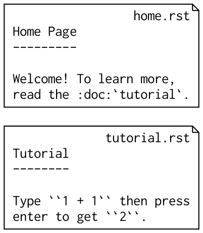
Running Sphinx generates HTML

When you first run Sphinx,
all the pages are built
preparing documents... done
writing output... [ 50%] home
writing output... [100%] tutorial
But if you run Sphinx a second time,
it detects that no input files have
been edited and rebuilds nothing
no targets are out of date.
build succeeded.
If you then edit one file and run Sphinx,
then Sphinx rebuilds only one target
preparing documents... done
writing output... [100%] tutorial
Sphinx saves time
by skipping files whose
HTML is already up-to-date
Sphinx, thus, is one example
of what’s called a build tool
make
April 1976
Stuart Feldman
Bell Laboratories
UNIX project
make
Still in use today!
The make tool
is general-purpose
It doesn’t need built-in knowledge
of your programming language
or document system
Instead, you describe a build
by writing a Makefile
(Aside: why the capital M,
when UNIX folks love
lowercase?
Makefile
A: When the computer sorts filenames
by their chr() code, capitals go first!
!"#$%&'()*+,-./0123456789:;<=>?
@ABCDEFGHIJKLMNOPQRSTUVWXYZ[\]^_
`abcdefghijklmnopqrstuvwxyz{|}~
$ ls
LICENSE
Makefile
README
home.html
home.rst
tutorial.html
tutorial.rst
If ls on your laptop
doesn’t sort capital letters first,
set LC_COLLATE=C in your .bashrc
to experience UNIX as it was intended.)
Anyway, the Makefile lists
the tasks for make to perform:
- Output files (“target”)
- Input files (“dependency”)
- The command to build each target
Example:
Let’s write a Makefile
to build the two Sphinx pages
we saw earlier.
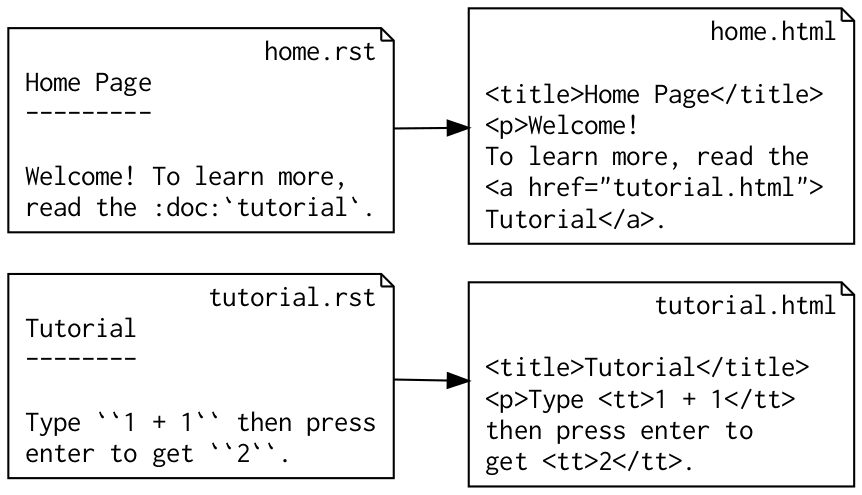
If we didn’t have Sphinx
to do the building for us,
we might write this:
# Makefile
home.html: home.rst
rst2html.py $< $@
tutorial.html: tutorial.rst
rst2html.py $< $@
Those two tasks are each a single step,
but build systems are often given
work that is several tasks deep
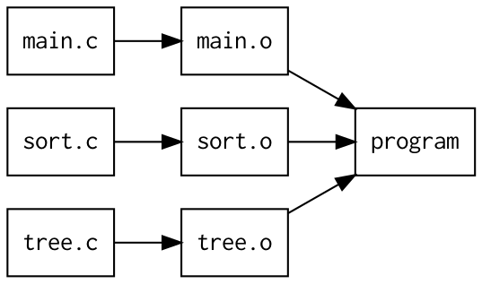
# Makefile
program: main.o sort.o utils.o
ld -o program main.o sort.o utils.o
main.o: main.c
cc -c $<
sort.o: sort.c
cc -c $<
tree.o: tree.c
cc -c $<
Just like Sphinx, make does
nothing if no files have changed
Make only builds a target if:
- The output file is missing
- The input file has been edited
Like Sphinx, when make detects
that an input file has been edited,
it rebuilds only the targets
affected by that edit.
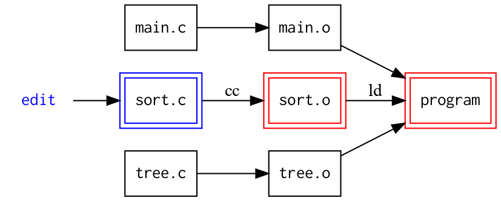
Once you learn about make,
you will start to see little
build systems everywhere
As we’ve already seen,
the Sphinx tool has a little
build system inside
Another example: Python’s distutils
in the Standard Library has a little
build system inside of it!
# setup.py
module1 = Extension('demo', sources=[
'main.c',
'sort.c',
'util.c',
])
A final example:
the Python interpreter itself
contains a tiny build system!
foo.py → foo.pyc
(Aside: have you ever removed foo.py
but found you can still import the module foo
because you forgot to remove foo.pyc? —
— Back in 2004, I set
PYTHONDONTWRITEBYTECODE=TRUE
in my .bashrc and over
the subsequent 17 years, I
have never regretted it!)
So: build systems
are everywhere
- make
- Sphinx
- distutils
- Python .py → .pyc
But build systems
for documents always seem
to have the same problem:
But build systems
for documents always seem
to have the same problem:
Cross references
What if I edit the
title of tutorial.rst?
Tutorial → Math Tutorial
-------- -------------
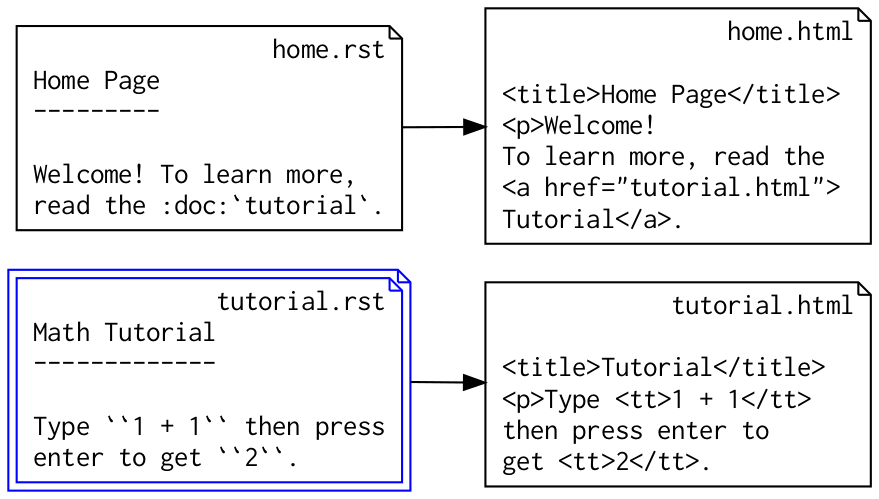
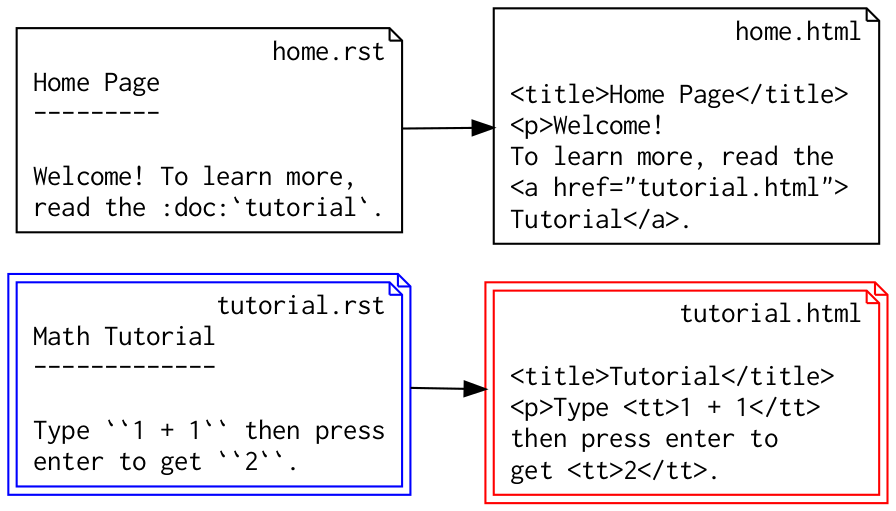
preparing documents... done
writing output... [100%] tutorial
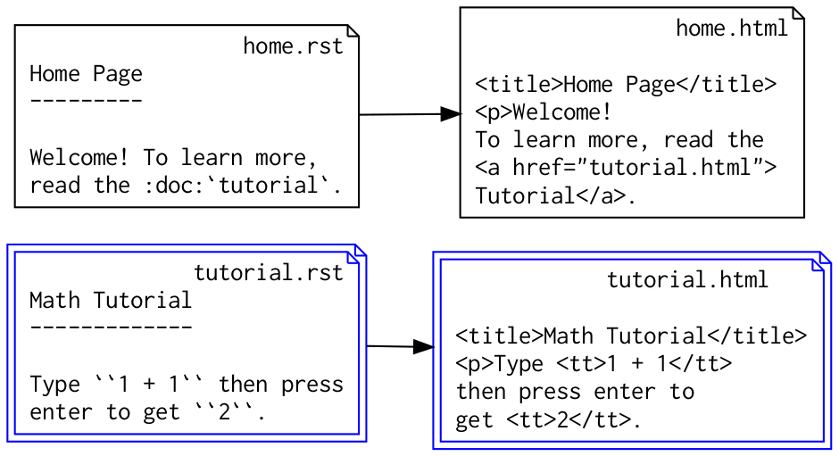
There’s just one problem.
Check out the cross reference
in home.html — it’s still
using the old title!
Sphinx didn’t realize
that home.html depends
on text that lives over
in tutorial.html.
This happens all the time,
so we programmers have learned
ways around the problem.
touch home.rst
to force a rebuild
rm -r build/ && sphinx-build
But even though we can work around
the problem, it raises a big question.
Big Question:
Could this be fixed?
Could we design a build system
that understands cross references
and always knows what to rebuild?
I won’t leave you in suspense
Answer:
Yes!
Yes, we can.
I helped write a successful prototype
solution as an open source project.
For their 500 Lines or Less book,
the Architecture of Open Source Applications (AOSA) project
asked me and computer scientist Dr. Daniel Rocco
contribute a small project and a chapter
The task they gave us:
- Write a project in ≤500 lines of code
- Discuss its software design in a book chapter
We decided: it was time to tackle
the cross reference problem!
Chapter 4
“Contingent: A Fully Dynamic Build System”
So how do you
design a build system?
Happily, the solution is very well-known
Build System Design
- Dependency graph
- Detect changes
- Rebuild in the right order
1. Dependency graph
“graph”
There are several ways
to represent a graph in
a computer program
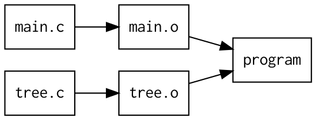
[('main.c', 'main.o'),
('tree.c', 'tree.o'),
('main.o', 'program'),
('tree.o', 'program')]
{'main.c': {},
'tree.c': {},
'main.o': {'main.c'},
'tree.o': {'tree.c'},
'program': {'main.o', 'tree.o'}}
Graphs are so popular,
you can even choose to skip
building your own representation —
- networkx (Python library)
- neo4j (database system)
- GraphQL (query language)
So: there are plenty of ways
for a build system to represent the
links between dependencies and targets
2. Detect Changes
Three well-known approaches
a. Compare file modify times
(make, distutils, Sphinx)
from os import stat
r = stat('home.rst').st_mtime
h = stat('home.html').st_mtime
if r > h:
print('Out of date!')
b. Compute file checksums
(Bazel, Gradle)
c. Subscribe to live OS file
events using inotify
c. Subscribe to live OS file
events using inotify
(Contingent!)
I use Contingent to build my website
and don’t want to waste time running
a command — I like it to rebuild
the moment I hit save!
So, there are several ways
to detect file changes
Once you detect a change,
it’s time to rebuild
3. Rebuild in the correct order

What if both *.c files
have been modified?
Danger
If we rebuild in random order,
we might build one of the
targets twice!
Why?
If you don’t give your
build system any guidance,
here’s what it might do:
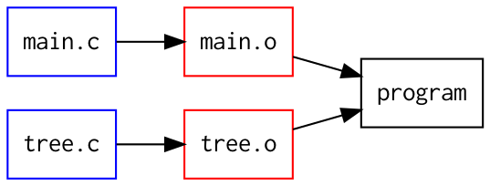
Both main.c and tree.c have been edited.
“Let’s rebuild main.o first”
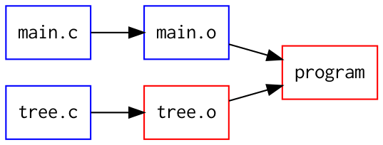
“Next, let’s rebuild the program”
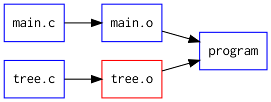

“Is there anything left to build?”
Oh, yes, now let’s rebuild tree.o
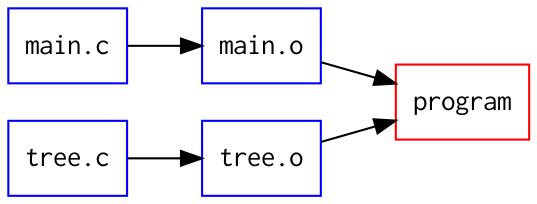
Oh, no, that made “program” out-of-date again!
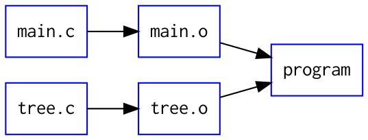
Only a second build of “program” makes it fully up-to-date
Building files in random order can
make us waste time building a target
several times during the same run.
General lesson:
To avoid building a target twice,
wait until all its dependencies
have been rebuilt
Well-known solution:
Run a topological sort on the
targets that need to be rebuilt,
to put targets after dependencies
So that’s basic build system design
- Dependency graph
- Detect changes
- Rebuild in the right order
So!
What big lesson do Dr. Rocco and I teach
in our book chapter about Contingent?
So, maybe predictably,
we use our chapter that describes
Contingent to illustrate a Design Pattern
We focused on how Contingent
represents the dependency graph
Facade Pattern
+
Anonymous data structures
Old days
class Node: …
class Edge: …
class Graph: …
Modern
class Graph: …
Q: If you only have one class,
how does it store its data?
A: In “anonymous” data structures!
Q: What do I mean by an
“anonymous” data structure?
A: I mean data structures without
special domain-specific names
like Edge or Node
Instead, we use simple data structures
like tuples, lists, dictionaries, and sets
to represent the dependency graph
{'main.c': {},
'tree.c': {},
'main.o': {'main.c'},
'tree.o': {'tree.c'},
'program': {'main.o', 'tree.o'}}
Then, use the Facade Pattern to hide
those data structures behind a single
big class that gives them meaning
class Graph:
def add_edge(name1, name2): …
def remove_edge(name1, name2): …
def nodes_upstream_of(name): …
def nodes_downstream_from(name): …
Our Graph methods speak the graph “domain language”
of “nodes” connected by “edges” but stores them
using plain old Python data structures!
Facade Pattern
+
Anonymous data structures
We argued that this Pythonic pattern
produces simpler code than a forest
of domain-specific classes
like Node and Edge
But re-reading Contingent’s code today,
I think there’s a seconds lesson that
Dr. Rocco and I could have drawn!
Yes, we usually think of a Design Pattern
as something we add to our code.
But I now think that it can be just as important
to see a Design Pattern and remove it!
Let’s now make explicit
the innovation we wanted
to make in Contingent!
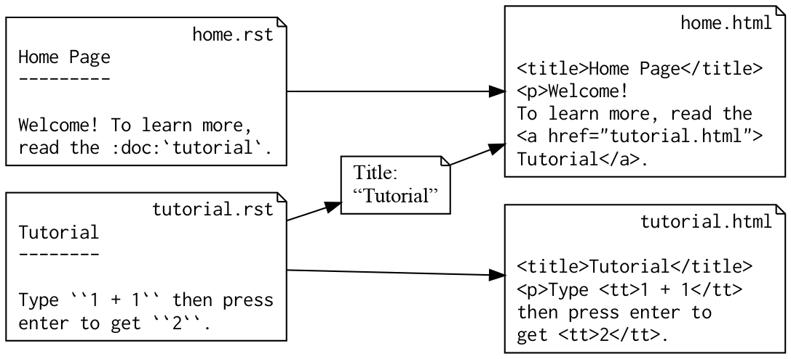
Build systems usually build their graphs
driven only by filenames.
We wanted Contingent to understand
dependencies that arise from file content!
I now want to show an example
with real parsing and rendering code
I now want to show an example
with real parsing and rendering code
Problem: parsing *.rst
files is pretty complex!
So let’s define a simpler markup language!
- Render *.in → *.out
- Most text will be copied verbatim.
- But `filename` will be replaced with that file’s title.
- What’s a file’s “title”? Its first line of text!
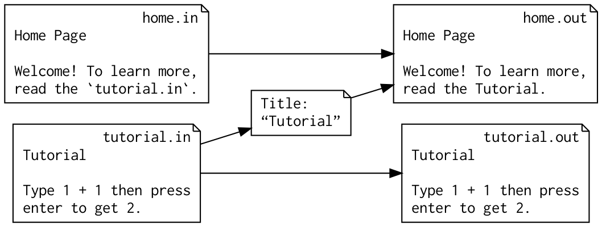
Happily, it’s easy to parse
this markup format!
text = 'Read `tutorial.in` and `guide.in`.'
pieces = text.split('`')
# 0 1 2 3 4
# ['Read ', 'tutorial.in', ' and ', 'guide.in', '.']
#
# Even index: text
# Odd index: document filename
for i in range(1, len(pieces), 2):
… # Loops over filenames!
So —
How can we explain to Contingent that
home.in needs the title from tutorial.in?
Every build system I had ever seen:
- Builds the dependency graph
- Starts running commands
That was always the order.
So I tried imagining the same thing:
# First idea: give framework two functions.
# One finds dependencies to build the graph,
# the other builds the output file.
def learn_dependencies(path, text):
yield 'text_of', path
t = text.split('`')
for i in range(1, len(t), 2):
yield 'title_of', t[i]
def render(text, title_dict):
t = text.split('`')
for i in range(1, len(t), 2):
t[i] = title_dict[t[i]]
return ''.join(a)
Two-phase approach
First step tells Contingent
the dependency → target edges
needed to build the graph.
Second step renders the output.
I then stepped back
and looked at the
sample code.
My reaction?
Ugh!
It made me unhappy.
Why?
As I stared at the code, I realized
that it reminded me of something.
# Have you ever seen “callback” code?
def step1(sock):
sock.connect(('python.org', 80), step2)
def step2(sock):
sock.sendall('data', step3)
def step3(sock):
sock.close()
# Callbacks are SO MUCH WORK!
# All you wanted was normal
# procedural code, like:
sock.connect(('python.org', 80))
sock.sendall('data')
sock.close()
# But instead, some framework forced you to
# atomize your code into a maze of goto’s.
def step1(sock):
sock.connect(('python.org', 80), step2)
def step2(sock):
sock.sendall('data', step3)
def step3(sock):
sock.close()
Well. Drat.
That’s exactly how I had just
designed Contingent: it needs each
task written as callback code!
def learn_dependencies(text):
yield 'text_of', path
t = text.split('`')
for i in range(1, len(t), 2):
yield 'title_of', t[i]
def render(text, title_dict):
t = text.split('`')
for i in range(1, len(t), 2):
t[i] = title_dict[t[i]]
return ''.join(a)
Just how bad is callback code?
It’s so bad that Python 3 added
two new keywords (“async” and “await”)
simply to help avoid the Callback Pattern.
Usually we think of a Design Pattern
as something we bring into our code.
(Facade Pattern → Contingent)
But in this case, I discovered a
pattern already in my design
that I wanted to remove.
Q: I know how to pivot
from callback network code
to procedural network code.
def step1(sock):
sock.connect(('python.org', 80), step2)
def step2(sock):
sock.sendall('data', step3)
def step3(sock):
sock.close()
sock.connect(('python.org', 80))
sock.sendall('data')
sock.close()
Can I now do the same thing
with text rendering code?
Yes!
def render(path):
pieces = read(path).split('`')
for i in range(1, len(pieces), 2):
pieces[i] = title_of(pieces[i])
return ''.join(pieces)
def title_of(path):
return read(path).splitlines()[0]
def read(path):
return open(path).read()
I love how code looks! But —
Q: How can Contingent run this code
while learning its dependencies?
A:
“All problems in computer
science can be solved
by another level
of indirection”
— David Wheeler
@task
def read(path):
...
@task
def title_of(path):
...
@task
def render(path):
...
By giving Contingent a @task decorator,
it can assume full control of each build step, even
though they are written as simple procedural code!
1. Contingent can now observe calls between tasks.
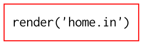
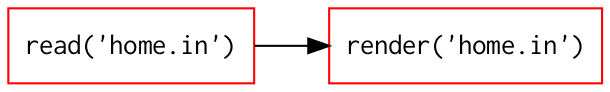
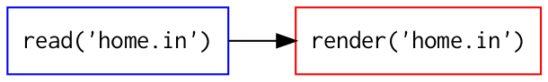
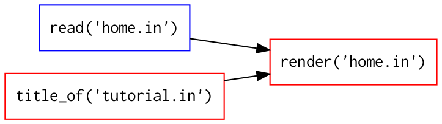
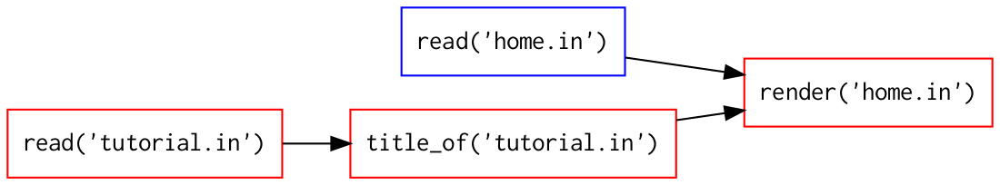
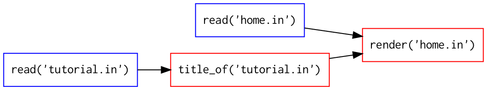
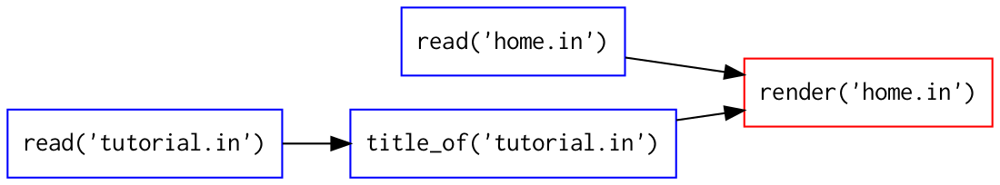
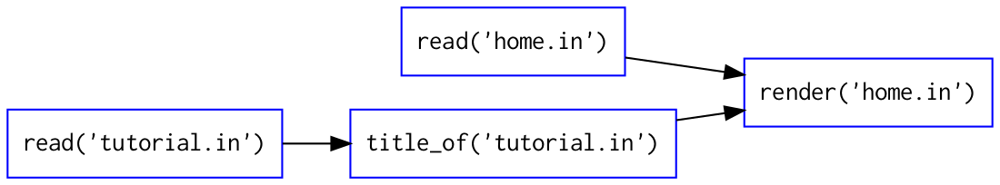
Thanks to Contingent’s decorator,
(a) we now know the call graph, and
(b) we rendered the first page successfully!
Let’s render the other page.
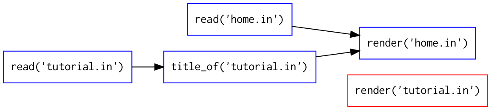
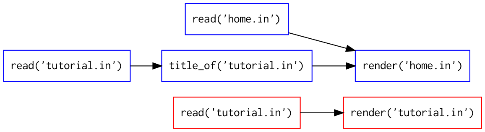
Wait! Wait!
Isn’t read('tutorial.in') a
task that we have already run?

This is a problem specific to Contingent.
Because make deals with files,
a target only needs to be built once.
The file can then be read over and over.
But Contingent has made a crucial pivot:
its nodes aren’t files; they are calls!
nouns → verbs
Q: Can Contingent, with its graph
of verbs, still avoid repeating an action?
A: Yes! It can use memoization.
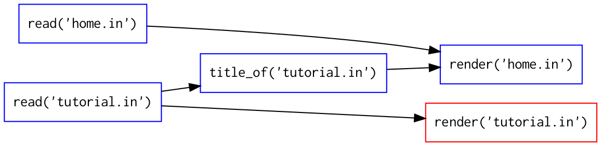
By caching the return
value of the first call to
read('tutorial.in')
Contingent makes sure that
the task only runs once.
Victory!
This is a complete
and workable design.
Endgame
What does Contingent
do when a file changes?
Removes out-of-date return
values from the memoization cache
and re-runs those tasks.
Running Contingent
to rebuild my blog
feels magic!
Documents are rebuilt
with a minimum of work, and —
for the first time in my
long history of using document
build systems
— the output is always correct.
rm -r build/
rm -r build/
Contingent builds and maintains
a complete call graph, while all the
programmer needs to do is write
plain procedural functions!
<Conclusion>
Don’t learn patterns in isolation
That only prepares you
to drop in a pattern when
you see a matching problem.
Instead, learn patterns
as alternatives to each other
Callbacks ↔ Procedures
list ↔ dict
How often do you have the chance
to try writing a second solution
to a programming problem?
It’s a crucial exercise
as you grow as a programmer!
When you don’t have time
to write two complete solutions,
learning to prototype can be crucial
to testing out different paths before
committing to one or the other.
You will be a much stronger programmer
when you know not only the code
you are currently writing,
but how the other possible
approaches would have turned out
that you could have been writing instead.
</Conclusion>
I know that, since PyCon Colombia is remote,
you won’t be able to simply walk up after my talk
and ask about my slides, or Python, or our community.
But, please, if you want to talk,
find me on Slack this weekend,
I would love to learn more about what
you are doing with Python in Colombia!
But, please, if you want to talk,
find me on Slack this weekend,
I would love to learn more about what
you are doing with Python in Colombia!
@brandon_rhodes
Thank you for listening!